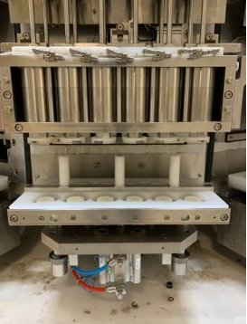
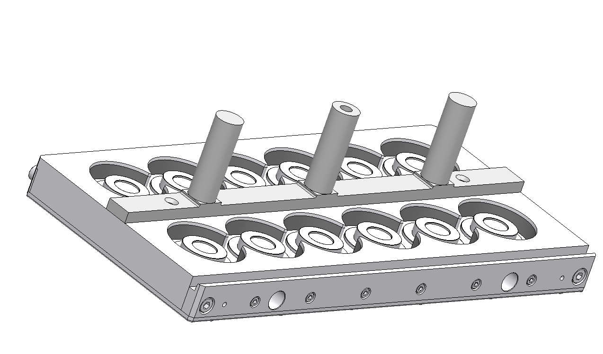
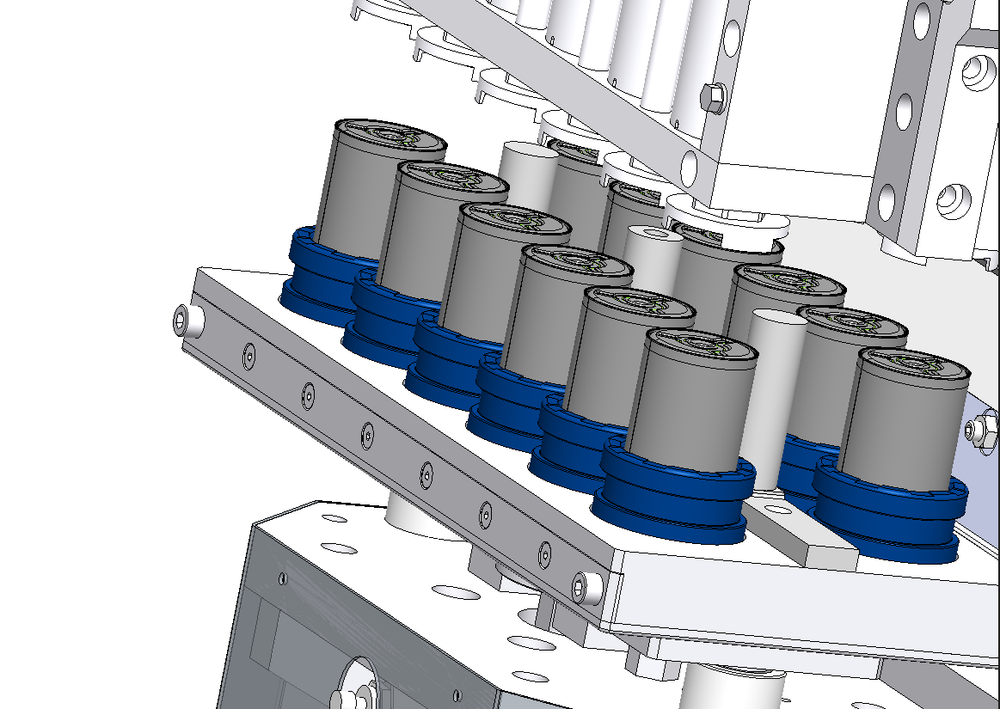

Case Study 06 · Structural Redesign
Carrier Redesign (CIP Leak Elimination)
Fixing a quality-critical sealing/deflection issue

Problem
A carrier assembly used in an automated clean-in-place (CIP) process on our electrolyte filling equipment had a structural deflection issue that caused a chemical leak — with a direct, measurable impact on downstream product quality.
My Role & Constraints
I owned the mechanical redesign of the carrier, coordinating with a controls engineer on a complementary process change.
Approach & Key Decisions
- Diagnosed the deflection as the root cause of the sealing failure during the CIP cycle.
- Redesigned the carrier's structural components (base and support rod geometry) to eliminate the deflection under process loading.
- Paired the mechanical redesign with a cleaning-sequence software update to further improve sealing performance.
- Deployed the updated design across the full equipment fleet.


Outcome
Eliminated the leak point entirely, with fleet-wide impact. The redesign is now a standard commissioning requirement across all of this equipment type.
+12%Improvement in equipment availability
+5%Increase in fleet capacity
~10%Reduction in downstream quality fallout
2,000+ hrs/moMaintenance dispatch hours eliminated
Skills Demonstrated
Structural / Deflection Analysis
Root-Cause Problem Solving
Cross-Functional Collaboration
Fleet-Wide Design Deployment
Measurable Quality Impact